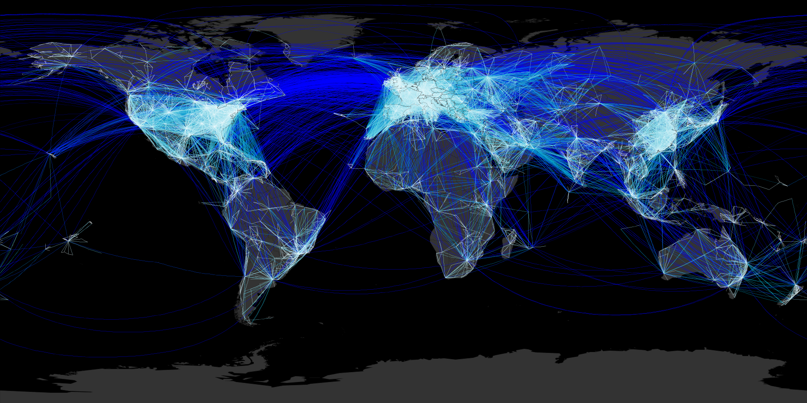

6 ottobre, 2015 | di Andrea Borruso
NdR: questo è stato pubblicato originariamente sul sito della dataninjaschool.
Introduzione
Tra gli strumenti esposti da Google Drive c’è Sheet, un foglio elettronico online ricco di funzioni, molto usato per le professioni e gli utilizzi più svariati.
I fogli creati fungono spesso da “contenitori” di dati, che fanno da sorgente a grafici, mappe, infografiche e applicazioni di svariata natura
L’accesso a Sheet si può eseguire tramite le API ufficiali di interrogazione. Nella documentazione ufficiale è indicato come generare un output, come generarne uno filtrato, come impostare i formati di output, come usarlo come un database relazionale su cui fare delle query SQL con aggregazione, calcoli, ecc.. Sul web, oltre alla guida dedicata, numerosi tutorial ed esempi.
Si tratta di operazioni semplici, con possibilità di uso molto ricche, per uno strumento che è comunque “per tutti“. Nella mia esperienza da formatore ho riscontrato però che per alcuni, la costruzione di una query non è di immediato apprendimento.
Questo post nasce proprio allo scopo di presentare uno strumento che consente di superare questi ostacoli: il buon vecchio Guardian Datastore Explorer di Tony Hirst.
Lo strumento
Il Guardian Datastore Explorer è un vecchietto arzillo: fa la sua prima apparizione nel lontanissimo 2009, un’altra era (non c’era ad esempio Instagram).
Sono due le caratteristiche principali che lo rendono molto interessante:
- consente facilmente di costruire in modo guidato un’interrogazione su uno Sheet di GDrive;
- è molto didattico. Utilizzandolo si impara ad usare il linguaggio di query e dopo poco tempo si impareranno a scrivere stringhe di interrogazione in autonomia con un semplice editor di testo.
E’ uno strumento web ed il suo URL è http://ouseful.open.ac.uk/datastore/gspreadsheetdb4.php.
Come si usa
Predisposizione del foglio Google Drive Sheet
E’ propedeutico avere un account su Google Drive. E poi è necessario avere un foglio elettronico con cui testare il Guardian Datastore Explorer: per le spiegazioni successive verrà utilizzato questo, con i musei del territorio comunale fiorentino.
Si tratta di dati aperti presenti sul portate dati.gov.it. Lo sottolineo perché un’altra cosa abilitata dagli open data è la didattica.
La prima cosa da fare con il foglio elettronico, è crearne una copia:

Fatta la “vostra” copia, è necessario impostarne la condivisione (tasto “Condividi” o “Share” in alto a destra), e fare in modo che (1) chiunque abbia l’URL del foglio, (2) possa visualizzarlo.

Poi si dovrà pubblicare sul web:

In questo video la sequenza della procedura sopra descritta:

La condivisione e la pubblicazione sul web sono necessarie perché il Guardian Datastore Explorer è utilizzabile soltanto con fogli pubblicamente accessibili.
Costruzione della query sul del foglio elettronico
La prima cosa da fare è ricavare il codice identificativo del foglio. Si trova all’interno dell’URL dello sheet ed è facilmente indetificabile.
Ad esempio nell’URL sottostante l’ID del foglio è quello in grassetto:
http://docs.google.com/spreadsheets/d/1nS167pnytroD9SQWi0BUa_eFaeCwuWOk1_0GvsBFmsg/edit#gid=108845820
Quindi in questo caso è “1nS167pnytroD9SQWi0BUa_eFaeCwuWOk1_0GvsBFmsg“.
Poi c’è aprire la pagina web del Guardian Datastore Explorer e (1) inserire l’ID del foglio e (2) fare click su “Preview table headings”. In questo modo l’interrogazione è stata attivata e come risultato vengono visualizzate le (3) intestazione delle colonne del foglio.

Subito dopo si può andare a pescare dati (“Go Fish” scrive l’autore) e iniziare a imparare come usare questo linguaggio di interrogazione, tramite la tabella di esempi riportata sul sito. Leggendola si vede che a tutti gli effetti si tratta un classico SQL (Structured Query Language). Qualche esempio:
| Obiettivo |
Comando |
| Selezionare tutti i record |
SELECT * |
| Selezionare le colonne A e B (ovvero la prima e la seconda) per tutti i record |
SELECT A,B |
| Selezionare tutti record per le colonne A e B, dove il valore della colonna I è uguale a “3467″ |
SELECT A,B WHERE I = 3467 |
| Selezionare tutti record delle colonne C e D, in cui la colonna F non assume il valore di 42043 |
SELECT C,D WHERE F != 3467 |
Nella pagina trovate molti altri esempi.
Un’interrogazione che si potrebbe fare sul foglio dei musei di Firenze potrebbe essere quella per cui applichiamo questi filtri:
- Soltanto le colonne A, B, E, F, G, H, I e K;
- i soli musei a Est della “Cappella Brancacci”;
- solo quelli Statali;
- solo quelli che hanno un numero di telefono associato;
- ordinati da Nord verso Sud.
Prima di costruirla, un breve video che illustra una prima query più semplice, in modo da prendere confidenza con lo strumento: le sole colonne “latitude” e “longitude”, dove la “latitude” è maggiore di 43.77 e tutto ordinato per longitudine crescente.

Fatta la query, poco sopra i risultati di output, tre righe di testo molto interessanti:

La prima è proprio la query che abbiamo costruito, secondo il linguaggio delle API di Google Drive:
select%20A%2CB where B%20%3E%2043.77 order by A asc
Nella stringa ci sono dei caratteri che ne rendono poco “leggibili” alcune parti: select A,B where B > 43.77 order by A asc si comprende meglio. In realtà la prima è il risultato dell’encoding dei caratteri della seconda. Questa è una procedura necessaria perché l’interrogazione viene lanciata tramite un URL, e in questo alcuni caratteri non sono consentiti. Nel nostro caso lo spazio deve essere codificato in “%20″, la “,” in “%2C”, il “<” in “%3E”.
La seconda contiene due hyperlink, a due dei formati di output possibili di una query fatta su Google Drive Sheet: l’HTML e il CSV. Il secondo è forse il formato più comodo per chi dovrà utilizzare i risultati di un’interrogazione per creare grafici, mappe e infografiche.
Questo ad esempio l’hyperlink per l’output in CSV:
http://spreadsheets.google.com/tq?tqx=out:csv&tq=select%20A%2CB%20where%20B%20%3E%2043.77%20order%20by%20A%20asc&key=1nS167pnytroD9SQWi0BUa_eFaeCwuWOk1_0GvsBFmsg
Se lo separiamo in blocchi, si evidenziano elementi interessanti:
tqx=out:csvserve per impostare il formato di output;tq=select%20A%2CB%20where%20B%20%3E%2043.77%20order%20by%20A%20asc per dichiarare la query;key=1nS167pnytroD9SQWi0BUa_eFaeCwuWOk1_0GvsBFmsg per dichiarare l’ID del foglio.
La terza riga un segnalibro che consente di aprire il Guardian Data Explorer con e fargli lanciare la query appena eseguita. E’ un modo per salvare l’interrogazione costruita.
Adesso siamo in grado di costruire la query indicata a inizio paragrafo:
- Soltanto le colonne A, B, E, F, G, H, I e K ->
select A,B,E,F,G,H,I,K
- i soli musei a Est della “Cappella Brancacci” ->
where B > 11.2438292167895
- solo quelli Statali ->
AND I matches 'Statale'
- solo quelli che hanno un numero di telefono associato ->
AND H !=""
- ordinati da Nord verso Sud ->
order by A desc
select A,B,E,F,G,H,I,K where B > 11.2438292167895 AND I matches 'Statale' AND H !=\"\" order by B desc
Per potere usare questa query è necessario eseguire la codifica dei caratteri in modo che possa essere inserita in un URL. Il risultato (mille strumenti online per farlo, uno è questo) dell’endoding è:
select%20A%2CB%2CE%2CF%2CG%2CH%2CI%2CK%20where%20B%20%3E%2011.2438292167895%20AND%20I%20matches%20%27Statale%27%20AND%20H%20!%3D%22%22%20order%20by%20B%20desc
E’ possibile usare allora questa stringa per creare l’URL che esegue l’interrogazione di sopra e che produce come un risultato un file CSV:
http://spreadsheets.google.com/tq?tqx=out:csv&tq=select%20A%2CB%2CE%2CF%2CG%2CH%2CI%2CK%20where%20B%20%3E%2011.2438292167895%20AND%20I%20matches%20%27Statale%27%20AND%20H%20!%3D%22%22%20order%20by%20B%20desc&key=1nS167pnytroD9SQWi0BUa_eFaeCwuWOk1_0GvsBFmsg
Il file scaricato sarà apribile con qualsiasi editor di testo, e qualsiasi foglio elettronico.

Usare l’output di una query per costruire una mappa online
Come già scritto sopra, il risultato di una di queste query può essere usata per visualizzare i dati in differenti modi. Uno è una mappa online (deformazione professionale).
Il dataset di esempio si presta, perché contiene la latitudine e la longitudine di ogni museo. Uno strumento free e open-source molto comodo per generare mappe da output di questo tipo è uMap. Tra i formati di input supportati proprio il CSV; l’unico requisito è che nel file CSV siano presenti le colonne denominate “latitude” e “longitude“.
La cosa interessante è che la mappa online sarà live e ogni aggiornamento fatto nel foglio elettronico, produrrà un aggiornamento della mappa. Questo avviene perché tutte le volte che verrà visualizzata, verrà lanciata una nuova query.
Nel video sottostante è illustrato come creare una mappa online live a partire proprio dall’URL soprastante, che produce in output un CSV.

Considerazioni finali
Il Guardian Datastore Explorer non è un query builder particolarmente potente ed elegante, ma è sicuramente uno strumento che rende semplice l’avvicinamento al Query Language di Google Drive Sheet.
Sopratutto fa comprendere che si tratta di un linguaggio semplice, e dopo poco tempo anche i novizi scriveranno le query “a mano” senza più usarlo. Bastano concetti di base di SQL, sapere fare l’encoding dei caratteri e leggersi la documentazione 
Posted in Didattica | No Comments »
3 ottobre, 2013 | di Andrea Borruso
MySQL è uno dei più diffusi database server, e non deve stupire che abbia un’estensione spaziale (peraltro attiva di default). Mi stupisce però che le funzioni per testare le relazioni spaziali tra oggetti siano limitate.
Mi spiego con un esempio classico: selezionare tutti i punti di un layer che cadono all’interno del perimetro di un poligono presente in un altro layer. E’ un’operazione tipica dei GIS, e presente in tutti database con estensione spaziale.
In MySQL basta lanciare una query spaziale di questo tipo:
SELECT * FROM poligoni as g1, punti as g2 WHERE Contains(g1.geometry,g2.geometry) = 1
Purtroppo però l’output non è costituito da tutti i punti contenuti nel perimetro di mio interesse, ma da tutti quelli contenuti nel rettangolo che lo include. Quest’ultimo è il classico Bounding Box, o come si definisce in ambiente MySQL Minimal Bounding Rectangles (MBR). Nel manuale online è riportato:
The OpenGIS specification defines the following functions. They test the relationship between two geometry values g1 and g2.
Questo dovrebbe garantire che l’output della funzione Contains() sia relativo al perimetro dell’oggetto “target”, ma poco più avanti si legge:
Currently, MySQL does not implement these functions according to the specification. Those that are implemented return the same result as the corresponding MBR-based functions.
Immagino che i GeoSpatial Developers abbiano diverse frecce al loro arco per superare questo problema, così come ne esisteranno diverse lato utente. Una potrebbe essere quella di non usare questo database server e fare tutto con PostGIS, Oracle Spatial, Spatialite, ecc., ma è troppo facile e non sempre si può scegliere.
Io ho pensato a GDAL/OGR ed alle sue utility per oggetti vettoriali, ed alla possibilità (che esiste dalla versione 1.10 della libreria) di usare il dialetto SQLite/Spatialite. Questo dialetto estende di molto quello che queste utility fanno (egregiamente) di default, ovvero eseguire delle query sql all’interno di un comando; ad esempio:
ogrinfo province.shp province -sql "SELECT nome FROM province WHERE ID_PRO = 2"
Con il dialetto SQLite/Spatialite ho a disposizione anche le funzioni per verificare relazioni spaziali tra oggetti, anche per quelle basi dati che non prevedono intrinsecamente la possibilità di farlo, proprio come MySQL spatial.
Andando nel concreto dovrei scrivere una cosa di questo tipo:
ogrinfo MYSQL:"mydb,user=myuse,password=mypwd,port=3306" -dialect sqlite -sql "SELECT *FROM poligoni as g1, punti as g2 WHERE Contains(g1.geometry,g2.geometry) = 1"
La sorpresa è che, nonostante si dichiari nella stringa il “dialetto” sqlite, si ottiene sempre come output quello relativo ai punti contenuti nel bounding box del perimetro di interesse. E’ un baco? Nella documentazione di OGR si legge:
All OGR drivers for database systems: MySQL, PostgreSQL and PostGIS (PG), Oracle (OCI), SQLite, ODBC, ESRI Personal Geodatabase (PGeo) and MS SQL Spatial (MSSQLSpatial), override the OGRDataSource::ExecuteSQL() function with dedicated implementation and, by default, pass the SQL statements directly to the underlying RDBMS. In these cases the SQL syntax varies in some particulars from OGR SQL. Also, anything possible in SQL can then be accomplished for these particular databases. Only the result of SQL WHERE statements will be returned as layers.
Ma si legge anche:
The SQLite dialect may be used with any OGR datasource, like the OGR SQL dialect. It is available through the OGRDataSource::ExecuteSQL() method by specifying the pszDialect to “SQLITE”. For the ogrinfo or ogr2ogr utility, you must specify the “-dialect SQLITE” option.
La soluzione l’ho trovata in un test stupido che ho voluto fare: accedere alla fonte MySQL non direttamente, ma tramite il Virtual Format di OGR, che in qualche modo astrae l’accesso al formato di input.
A partire quindi da una fonte MySQL costruita secondo le specifiche del Virtual Format e salvata come “test.vrt”:
<ogrvrtdatasource>
<ogrvrtlayer name="poligoni">
<srcdatasource>MYSQL:mydb,user=myuser,
password=mypwd,port=3306,host=127.0.0.1
</srcdatasource>
<srclayer>poligoni</srclayer>
<geometrytype>wkbPolygon</geometrytype>
<layersrs>epsg:4326</layersrs>
</ogrvrtlayer>
<ogrvrtlayer name="punti">
<srcdatasource>MYSQL:mydb,user=myuser,
password=mypwd,port=3306,host=127.0.0.1
</srcdatasource>
<srclayer>punti</srclayer>
<geometrytype>wkbPoint</geometrytype>
<layersrs>epsg:4326</layersrs>
</ogrvrtlayer>
</ogrvrtdatasource>
Posso ad esempio lanciare:
ogrinfo test.vrt -dialect sqlite -sql "SELECT *FROM poligoni as g1, punti as g2 WHERE Contains(g1.geometry,g2.geometry) = 1"
Il risultato ottenuto sarà così quello desiderato e l’output corrisponderà a tutti i punti che ricadono nel perimetro di interesse. Nell’immagine di sotto, ho raccontato il tutto in modo visuale.
Concludo sottolineando quanto siano interessanti, utili, belle e di alto livello professionale alcune delle dinamiche delle comunità open source. Ho segnalato quello che a me sembrava un baco alla lista GDAL – DEV. Non solo ho ottenuto subito delle risposte che mi hanno consentito di capirne molto di più, ma si sono messi già al lavoro sia in termini di codice che di documentazione. Un semplice “grazie” sembra veramente poco.

Questo post è dedicato a Flaviano, un mio amico che grazie anche ad alcuni tips & tricks su GDAL/OGR ha trovato un bel posto di lavoro in Qatar
NDR: Jukka Rahkonen, uno sviluppatore di GDAL/OGR, mi fa notare che dalla release in trunk r26506 di GDAL e a partire dalle future release stabili ufficiali, non sarà necessario creare alcun file virtuale. Si potrà accedere direttamente alla sorgente MySQL e impostare la proprietà “-dialect” al valore “SQLITE”.
Posted in Didattica | 1 Comment »
17 gennaio, 2011 | di Antonio Falciano
Scopo del presente post è presentare un formidabile linguaggio di scripting, in cui io e Giovanni Allegri ci siamo imbattuti da un po’ di tempo a questa parte, che presenta delle potenzialità davvero eccezionali nel processamento di dati geospaziali. Il pretesto occasionale che ha riacceso il nostro sopito interesse nei confronti di JEQL é un recente post del blog Lin.ear Th.inking, Visualizing geodetic information with JEQL, in cui l’autore Martin Davis (aka “Dr JTS”, l’attuale designer e lead developer della fantastica libreria JTS …e non solo!) introduce delle nuove funzioni geodetiche di calcolo sulle geometrie all’interno di JTS, illustrandone l’utilizzo mediante un’applicazione in JEQL che ripercorreremo nel seguito.
Cos’è JEQL?
JEQL è un Query Language sviluppato in Java, dove la “E” può assumere i seguenti significati:
- Extended, poiché implementa un numero sempre crescente di estensioni che lo rende più potente nel processamento dei dati rispetto alle tante versioni e dialetti SQL esistenti;
- Embeddable, in quanto il motore di JEQL può essere integrato all’interno di altre applicazioni, in modo da essere utilizzato come query language per modelli di dati tabellari;
- ETL, essendo l’Extract/Transform/Load il caso d’uso ideale di JEQL;
- Efficient, dato che garantisce velocità di sviluppo ed esecuzione.
JEQL è dunque un linguaggio di scripting che consente il processamento di strutture di dati tabellari, compresi quelli geografici vettoriali. Fin qui nulla di nuovo, probabilmente penseranno i lettori esperti dei possenti RDBMS con estensione spaziale (PostgreSQL + PostGIS, Oracle Spatial, MySQL, ecc.) o del più leggero e, al tempo stesso, molto versatile SpatiaLite. Analogamente a quest’ultimo, JEQL non richiede l’installazione di un server database e ciò, assieme al fatto che è un linguaggio di scripting, rappresenta un grosso vantaggio in termini di portabilità. Si pensi ad esempio alla replicazione della configurazione di un DBMS a distanza di parecchio tempo oppure alla condivisione di uno script con un nostro collega. Inoltre, anche la velocità di sviluppo e di esecuzione rappresentano dei non trascurabili punti di forza. Naturalmente, esistono anche dei task non coperti da JEQL per i quali un RDBMS è insuperabile.
Quali tipi di dati è in grado di utilizzare? Oltre ai classici tipi Java (interi, stringhe, double) e le date, JEQL supporta anche le geometrie JTS e un vasto repertorio in continua crescita di funzioni spaziali, costruttori di predicati e funzioni di aggregazione, che lo rendono uno strumento particolarmente adatto per il processamento di dataset spaziali. Inoltre, è in grado di accedere in lettura e scrittura a diversi formati di dati (CSV, DBF, SHP, KML) e database compatibili con JDBC (Java Data Base Connectivity).
L’installazione di JEQL è molto semplice: nei sistemi operativi Windows, basta scompattare il pacchetto di installazione (è appena stata rilasciata la versione 0.9) in una cartella con percorso non contenente spazi ([JEQL_HOME]) ed aggiungere nella variabile PATH di sistema il percorso [JEQL_HOME]\bin. Manca, tuttavia, uno script shell o qualcosa di analogo per Linux, che tuttavia non dovrebbe essere difficile da produrre.
L’apprendimento del linguaggio JEQL è abbastanza rapido, soprattutto per chi possiede già dei rudimenti di SQL, ed è facilitato dall’interprete che guida l’utente nell’individuazione e nella correzione degli errori. Il pacchetto di installazione è inoltre corredato da una lista di unit test, ovvero gli stessi esempi basilari utilizzati in fase di collaudo del codice. La documentazione rappresenta invece una delle poche note dolenti, essendo ancora un work in progress, nonostante la presenza di alcuni illuminanti esempi applicativi, diversi post su Lin.ear Th.inking e una mailing list dedicata, oltre alla indiscutibile cortesia e competenza dello sviluppatore.
Attualmente JEQL è rilasciato con doppia licenza: freeware e “commerciale”. Quest’ultima per consentirne l’integrazione all’interno di software commerciali (…e in quelli open source?).
Un esempio applicativo: worldAirRoutes.jql
Nel seguito, si cercherà di fornire un saggio delle potenzialità di JEQL, proponendoci le stesse finalità del post citato in precedenza, ovvero disegnare le rotte aeree a scala globale secondo linee ortodromiche, piuttosto che linee rette, con tutti gli accorgimenti del caso al fine di ottenere una buona resa grafica. Ci cimenteremo passo dopo passo con le fasi di importazione e normalizzazione dei dati di interesse fino al raggiungimento dello scopo. I dati utilizzati nell’applicazione sono:
In particolare, i primi due sono parte degli open data del progetto OpenFlights, rilasciati con Open Database License (Odbl), mentre lo shapefile semplificato dei world borders (a proposito della loro qualità, si consiglia la lettura di questo post e successivi) è rilasciato da thematicmapping.org con licenza Creative Commons CC-SA.
Dopo aver installato JEQL 0.9, creiamo una cartella, vi collochiamo i dati appena scaricati (scompattando naturalmente lo zip file) e vi definiamo inoltre un semplice file di testo (worldAirRoutes.jql) nel quale andremo a scrivere il nostro codice.
Il primo passo dell’applicazione consiste nell’importazione dei dati relativi agli aeroporti (airport.dat), tenendo presente che i file .dat in esame sono in formato CSV:
// Read data from CSV
CSVReader airports file: "airports.dat";
numAirports = select count(*) from airports;
Print "Number of airports to clean: " + val(numAirports);
Print airports limit: 10;
Salviamo lo script, apriamo il prompt dei comandi e collochiamoci nella directory che lo contiene. Per eseguirlo occorre digitare jeql worldAirRoutes.jql e premere il tasto Invio. Successivamente, nel prompt dei comandi comparirà qualcosa del genere:
Number of airports to clean: 6344
col1:String, col2:String, col3:String, col4:String, col5:String, col6:String, col7:String, col8:String, col9:String, col10:String, col11:String
1 Goroka Goroka Papua New Guinea GKA AYGA -6.081689 145.391881 5282 10 U
2 Madang Madang Papua New Guinea MAG AYMD -5.207083 145.7887 20 10 U
3 Mount Hagen Mount Hagen Papua New Guinea HGU AYMH -5.826789 144.295861 5388 10 U
...
La prima cosa che scopriamo è che le colonne della tabella “airports” sono identificate come “col1, col2 … colN”, sebbene il file CSV sia sprovvisto delle relative intestazioni dei campi (per la descrizione dei quali si rimanda a questa pagina), e che i campi sono considerati tutti di tipo String. Procediamo quindi con la normalizzazione dei dati degli aeroporti, selezionando i dati di nostro interesse:
// Select airports data with valid IATA airport code
airports2 = select
col2 as name,
col3 as city,
col4 as country,
col5 as code,
col7 as lat,
col8 as lon
from airports
where RegEx.matches(col5,'[A-Z]{3}');
E’ interessante notare che:
- per definire gli alias dei campi di una tabella è utilizzata la parola chiave as, così come avviene solitamente in molte versioni di SQL, tuttavia si tenga presente che in JEQL il suo uso è a discrezione dell’utente;
Occorre, inoltre, verificare la presenza di eventuali codici IATA duplicati, in modo da essere certi dell’univocità del campo “code”, al fine di utilizzarlo poi come chiave esterna nelle operazioni di join con la tabella delle rotte aeree (routes.dat), come si vedrà nel seguito.
// Find duplicate IATA airport codes in airports data
duplicateCodes = select *
from (select code, count(code) as numOccurrences
from airports2
group by code) as duplicates
where numOccurrences > 1;
Print duplicateCodes;
A fronte di tale verifica, si riscontra un unico codice duplicato (“TCG”). Avvalendoci dell’ausilio della banca dati ufficiale è possibile risolvere tale ambiguità, scartando l’aeroporto di Tocache (Cina) al quale è stato erroneamente attribuito questo codice. A tal fine, la clausola where della prima select diventa:
where RegEx.matches(col5,'[A-Z]{3}')
and col3!="Tocache";
E’ dunque possibile commentare il codice relativo alla ricerca dei duplicati (“//” commenta una singola riga, mentre “/* … */” tutto il codice tra essi compreso – non a caso, come nel linguaggio Java) e verificare la bontà dei risultati fin qui ottenuti, visualizzando eventualmente i primi dieci record della tabella “airports2”.
// Check intermediate results
numAirports2 = select count(*) from airports2;
Print "Number of airports without duplicates: " + val(numAirports2);
Omettendo per brevità la visualizzazione del contenuto delle tabelle, otteniamo:
Number of airports without duplicates: 5023
Successivamente, si procede all’importazione e normalizzazione dei dati relativi alle rotte aeree (routes.dat). In particolare, selezioniamo i codici IATA degli aeroporti di origine e destinazione relativi a ciascuna rotta aerea, e li combiniamo in un’unica stringa in modo da poter escludere le rotte duplicate mediante l’operazione di raggruppamento (group by). Da queste stringhe è poi possibile recuperare nuovamente i codici dai quali sono stati ottenuti. Inoltre, definiamo una chiave primaria “rid” tramite la funzione rownum() che restituisce il numero di riga.
// Read data from CSV
CSVReader routes file: "routes.dat";
numRoutes = select count(*) from routes;
Print "Number of routes to clean: " + val(numRoutes);
// Select routes data removing duplicates
routes2 = select
rownum() as rid,
String.substring(routeCode, 0, 3) as fromCode,
String.substring(routeCode, 3, 6) as toCode
from (select
//col3 as fromCode,
//col5 as toCode,
col3+col5 as routeCode
from routes
order by routeCode asc) as routesWithDuplicates
group by routeCode;
// Check intermediate results
numRoutes2 = select count(*) from routes2;
Print "Number of routes without duplicates: " + val(numRoutes2);
ottenendo:
Number of routes to clean: 64114
Number of routes without duplicates: 36004
Il task successivo consiste nell’associare ad ogni rotta aerea le coordinate dell’aeroporto di partenza e di quello di destinazione, scartando le coordinate con valore null e validando quelle che non lo sono, facendo ancora una volta ricorso alle espressioni regolari.
// Extract origin airport data
fromAirport = select
rid,
fromCode,
name as fromName,
city as fromCity,
country as fromCountry,
lat as fromLat,
lon as fromLon
from routes2
left outer join airports2
on routes2.fromCode == airports2.code;
// Extract destination airport data
toAirport = select
rid,
toCode,
name as toName,
city as toCity,
country as toCountry,
lat as toLat,
lon as toLon
from routes2
left outer join airports2
on routes2.toCode == airports2.code;
// Join the last two tables (removing records with null coords)
troute = select fromAirport.*, toAirport.* except rid
from fromAirport
join toAirport
on fromAirport.rid==toAirport.rid
where not Val.isNull(fromLat) and not Val.isNull(fromLon) and not Val.isNull(toLat) and not Val.isNull(toLon);
// Check if coords are valid
troute2 = select *
from troute
where RegEx.matches(fromLat,'-?((([0-9]|[1-8][0-9])(\.[0-9]*)?)|(90))')
and RegEx.matches(fromLon,'-?((([0-9]|[1-9][0-9]|1[0-7][0-9])(\.[0-9]*)?)|(180))')
and RegEx.matches(toLat,'-?((([0-9]|[1-8][0-9])(\.[0-9]*)?)|(90))')
and RegEx.matches(toLon,'-?((([0-9]|[1-9][0-9]|1[0-7][0-9])(\.[0-9]*)?)|(180))');
// Check intermediate result
numRoutes3 = select count(*) from troute2;
Print "Number of routes without duplicates and with valid coords: " + val(numRoutes3);
che ci restituisce:
Number of routes without duplicates and with valid coords: 35475
Un altro aspetto degno di nota è l’utilizzo della parola chiave except nella select della tabella “troute”. Si tratta di un’estensione solitamente assente nei vari linguaggi SQL che ci consente di selezionare tutti i campi di una particolare tabella ad eccezione di un campo.
Infine, selezioniamo i dati da cui poter derivare le geometrie delle rotte aeree e rappresentarle graficamente (da qui in poi, il codice è quello del Dr JTS con qualche piccolo adattamento):
// Convert coords from string to double
trte = select fromCity, toCity,
Val.toDouble(fromLon) fromLon, Val.toDouble(fromLat) fromLat,
Val.toDouble(toLon) toLon, Val.toDouble(toLat) toLat
from troute2;
// Split geodetic arcs and calculate lengths
tlines = select fromCity, toCity, line, len
with {
line = Geodetic.split180(Geodetic.arc(fromLon, fromLat, toLon, toLat, 2));
len = Geom.length(line);
}
from trte order by len desc;
// Interpolate line color and fix line width
tplot = select line,
Color.interpolate("ffffff", "00aacc", "0000ff", len / 50.0 ) lineColor,
0.2 lineWidth
from tlines;
// Import shapefile data
ShapefileReader tworld file: "TM_WORLD_BORDERS_SIMPL-0.3.shp";
// Select geometries and define line and fill colors
tworldLine = select GEOMETRY, "222222" lineColor from tworld;
tworldFill = select GEOMETRY, "333333" fillColor from tworld;
// Plot routes with world landmasses
width = 1800;
Plot width: width height: width / 2
extent: LINESTRING(-180 -90, 180 90)
data: tworldFill
data: tplot
data: tworldLine
file: "routes.png";
// Plot routes without world landmasses
Plot width: width height: width / 2
extent: LINESTRING(-180 -90, 180 90)
data: tplot
file: "routes_only.png";
Qui è possibile effettuare il download dell’intero script. Infine, si mostrano le due immagini risultanti in cui sono rappresentate le rotte aeree rispettivamente con e senza i world borders. In particolare, le rotte sono disegnate in ordine di lunghezza decrescente, utilizzando un colore interpolato in base alla lunghezza, per cui spiccano le rotte più brevi con colore più chiaro. Anche nella seconda immagine, è possibile rilevare con buona approssimazione i limiti di molte terre emerse.

Come giustamente afferma Martin Davis, dalla densità delle rotte aeree che si percepisce nelle immagini si evince come agli europei piaccia molto volare. Ma neanche quelli delle East Coast scherzano! 
Conclusioni
L’esempio applicativo appena mostrato esprime già molte delle potenzialità offerte da JEQL, e i comandi attualmente disponibili sono molto numerosi (basta digitare jeql -man per scoprirlo!). JEQL offre inoltre anche la possibilità di estendere le sue funzionalità tramite un’interfaccia di programmazione (API), non ancora documentata, tramite la quale creare nuovi comandi e funzioni da poter utilizzare all’interno dei nostri script. Non nascondiamo la speranza, in parte malcelata dallo stesso Martin Davis, che un domani si possa usufruire di una doppia licenza open source/commerciale, che permetta di contribuire alla crescita della libreria con nuovi plugin e una migliore documentazione di tutte le caratteristiche offerte.
Ringraziamenti
Desidero ringraziare Giovanni Allegri, non solo per il proficuo scambio di idee avvenuto dietro le quinte, ma anche per aver sollecitato il rilascio della nuova release (0.9) di JEQL, senza la quale non sarebbe stato possibile riprodurre l’applicazione, e naturalmente Martin Davis, il padre di questo formidabile linguaggio, per aver ispirato questo post.
Posted in Strumenti | 2 Comments »